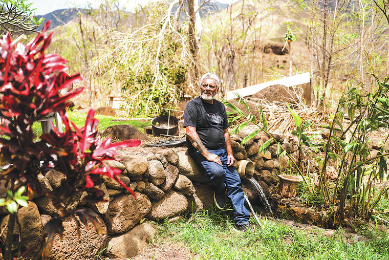
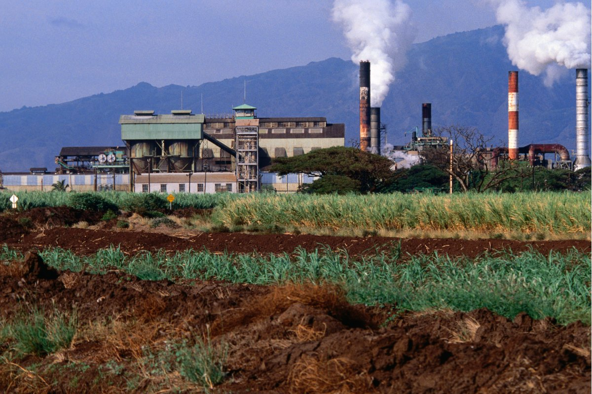
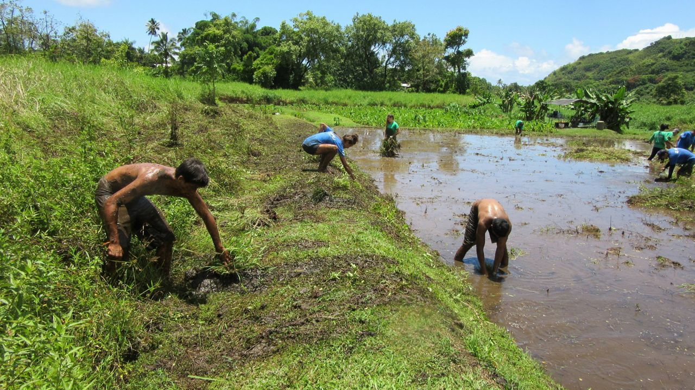
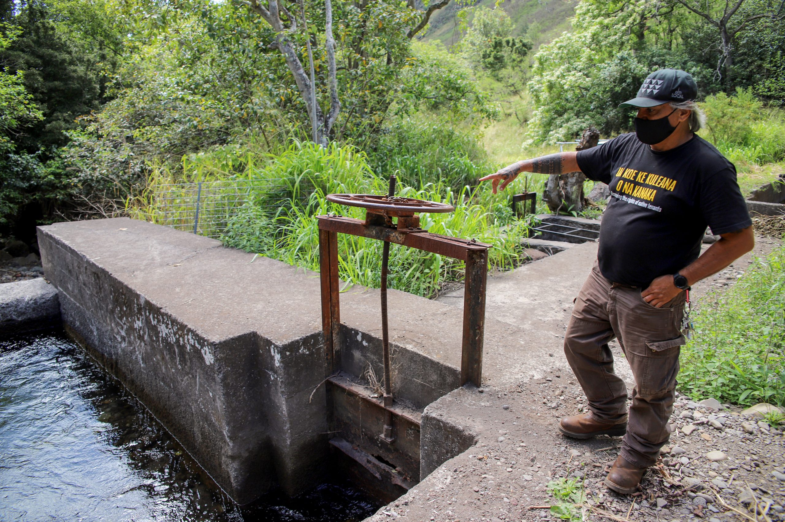

NĀ PILIKIA PILI WAI
The battles and problems revolving around water in Maui, Hawaiʻi
WAI BATTLES
For over a century, water diversion from East Maui’s streams to support commercial agriculture has deeply impacted Native Hawaiian communities and ecosystems. These streams, once sustaining the rich tradition of kalo farming and native stream life, have been siphoned away by private interests like Alexander & Baldwin (A&B). Water, which the Native Hawaiians revere as life itself — "Ola i ka wai"— was meant to be shared and preserved for all. Yet, for decades, laws have been bent to allow corporations to profit while traditional farmers and the environment suffer. This ongoing diversion threatens not only the livelihood of kalo farmers but also the delicate balance of nature and cultural heritage tied to the islands’ waters. The horror of this struggle underscores the importance of water as a communal lifeline, not a commodity for exploitation. Water access is not public in Maui. Water ownership is not public in Maui. The more they take, the less we exist.

Maui's water diversion problem traces back to the late 1800s when streams were diverted for sugar plantations. Even after the plantations closed, the diversions remained in place. Later, companies like the West Maui Land Company (WML) purchased the former plantations and developed residential communities and resorts, continuing to divert and stockpile water. Meanwhile, A&B/EMI/HC&S has been extracting millions of gallons from East Maui streams daily, using month-to-month revocable permits without environmental impact assessments or public auctions. Legal battles have ensued, with environmental groups and farmers seeking to restore water flow. In 2022, a state court reduced A&B/EMI/HC&S’s water diversion by a quarter, though the ruling fell short of fully favoring the state. The ongoing diversions have harmed ecosystems, disrupted cultural practices, and threatened public health in East Maui. The 2023 wildfires further intensified the water crisis, leaving the community of Lahaina devastated and fire crews struggling with a lack of water.


